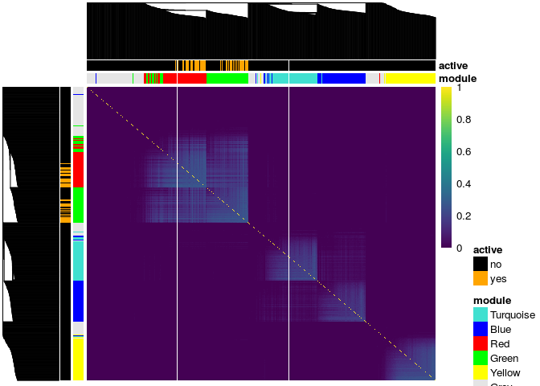
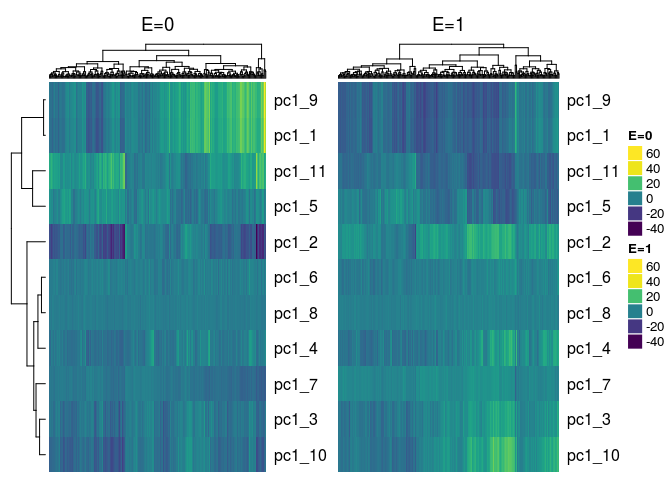

Plots¶
Plot Method for Object of class similarity¶
There is a plot method for similarity matrices included in this package, though it is very specific to the simulated data only since the resulting plot annotates the true cluster membership of the genes. The plot uses the pheatmap package for the heatmaps along with the viridis package for the color scheme so these packages need to be installed prior to using this function.
The plot method is for objects of class similarity. The following objects, which are outputs of the s_generate_data function, are objects of class similarity:
| object.name |
|---|
| tom_train_all |
| tom_train_diff |
| tom_train_e1 |
| tom_train_e0 |
| corr_train_all |
| corr_train_diff |
| corr_train_e1 |
| corr_train_e0 |
| fisherScore |
| corScor |
To plot the heatmap of the similarity matrix, you need to provide it with the clustering tree, the cluster membership and the genes active in the response. In this example we plot the TOM matrix for the exposed subjects given by the tom_train_e1 object. The resulting heatmap has annotations for the cluster membership and if the gene is active in the response:
# check that the object is of class similarity class(result$tom_train_e1)
## [1] "matrix" "similarity"
# get clustering tree hc <- hclust(as.dist(1 - result$tom_train_e1), method = "average") plot(result$tom_train_e1, truemodule = truemodule1, cluster_rows = hc, cluster_cols = hc, active = as.numeric(betaMainEffect!=0))

Plot Method for Object of class eclust¶
There is also a function that plots heatmaps of cluster summaries such as the 1st principal component or average by exposure status. This is a plot method for object of class eclust returned by the r_cluster_data function. Two heatmaps, side-by-side are returned, where the first heatmap corresponds to the unexposed subjects and the second heatmap corresponds to the exposed subjects.
# load the data data("tcgaov") # use log survival as the response Y <- log(tcgaov[["OS"]]) # specify the environment variable E <- tcgaov[["E"]] # specify the matrix of genes only genes <- as.matrix(tcgaov[,-c("OS","rn","subtype","E","status"),with = FALSE]) # for this example the training set will be all subjects. # change `p` argument to create a train and test set. trainIndex <- drop(caret::createDataPartition(Y, p = 1, list = FALSE, times = 1)) testIndex <- trainIndex cluster_res <- r_cluster_data(data = genes, response = Y, exposure = E, train_index = trainIndex, test_index = testIndex, cluster_distance = "corr", eclust_distance = "diffcorr", measure_distance = "euclidean", clustMethod = "hclust", cutMethod = "dynamic", method = "average", nPC = 1, minimum_cluster_size = 30)
## ..cutHeight not given, setting it to 10.9 ===> 99% of the (truncated) height range in dendro. ## ..done. ## Calculating number of environment clusters based on diffcorr ## ..cutHeight not given, setting it to 0.923 ===> 99% of the (truncated) height range in dendro. ## ..done. ## There are 7 clusters derived from the corr similarity matrix ## There are 4 clusters derived from the diffcorr environment similarity matrix ## There are a total of 11 clusters derived from the corr ## similarity matrix and the diffcorr environment similarity matrix
We check the class of the object returned from the clustering results on the tcgaov data:
class(cluster_res)
## [1] "eclust"
We simply pass this object to the generic plot function:
plot(cluster_res, show_column_names = FALSE)
